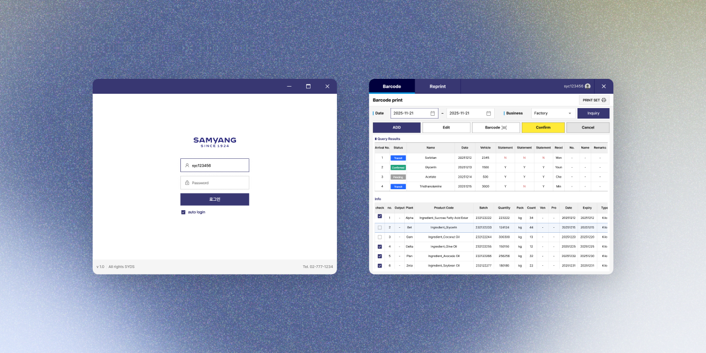
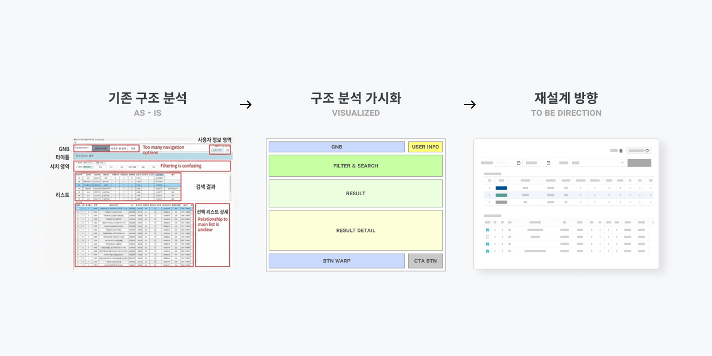
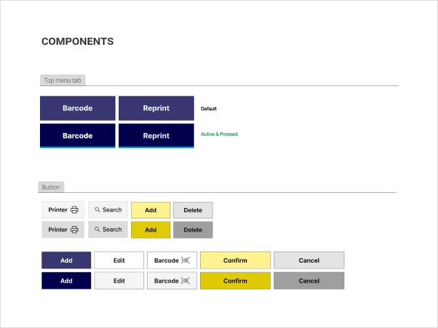
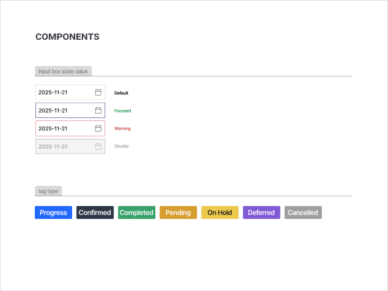

바코드 출력 시스템 UI 개선
터치 기반 현장 환경에 맞게 UI 구조를 재설계하여 반복 작업의 속도와 정확도를 개선한 시스템 디자인 프로젝트.

터치 기반 바코드 출력 시스템 메인 화면
Context
현장 업무 담당자가 사용하는 내부 시스템으로, 터치 패드 모니터 환경에서 반복적인 출력 작업을 수행해야 하는 서비스였다.
기존에 사용 중인 컬러 체계가 존재했으며, 이를 유지하면서 UI 개선이 필요한 상황이었다.
Problem
기존 바코드 출력 시스템은 웹 환경 기준으로 제작되어 터치 기반 사용 환경에 최적화되어 있지 않았다.
또한 기능이 중복되거나 유사한 버튼이 분산되어 있어 사용자가 빠르게 작업하기 어려운 구조였다.
Issue
단순한 UI 수정이 아니라 사용 환경에 맞는 구조 자체를 다시 설계해야 하는 문제였다.
- 터치 환경에 맞지 않는 버튼 및 입력 요소 크기
- 중복된 기능과 분산된 UI 구조
- 빠른 작업 흐름을 방해하는 정보 배치
즉, 속도와 정확도가 중요한 환경에서 UI가 이를 지원하지 못하는 상태였다.

기존 구조 분석 및 재설계 방향 정리
My Judgment
현장 시스템의 핵심은 미적인 완성도보다 작업 효율성과 명확한 동선이라고 판단했다.
- 한 번의 시선 이동으로 주요 액션 인지 가능
- 터치 오류를 줄이는 충분한 인터랙션 영역
- 반복 작업에 최적화된 단순한 구조
- 기존 컬러 체계를 유지하면서도 역할 구분 명확화
Strategy
- 전체 레이아웃 구조를 해체 후 재구성
- 유사 기능 버튼 그룹핑 및 중복 기능 통합
- 사용 빈도 기반 UI 우선순위 재배치
- 기존 컬러 체계를 유지하면서 기능별 역할 재정의
- 핵심 액션 버튼을 명확히 드러내는 시각 구조 설계


터치 최적화 및 기능 그룹핑 구조
Execution
- 터치 환경에 맞게 버튼, 폰트, 입력 요소 크기 전면 조정
- 기능별 그룹핑을 통해 UI 단순화
- 중복 기능 제거 및 인터페이스 통합
- 사용 빈도에 따라 주요 기능을 상단 및 핵심 영역에 배치
- Call To Action 버튼에 강조 컬러를 적용해 시각적 우선순위 부여
- 현장 사용성을 고려한 레이아웃 및 인터랙션 구조 설계
최종 바코드 출력 작업 흐름 화면
Result
터치 환경에서도 오작동 없이 빠르고 정확한 작업이 가능하도록 UI가 개선되었다.
사용자는 주요 기능을 빠르게 인지하고 실행할 수 있게 되었으며, 반복 작업의 피로도와 오류 가능성이 감소하였다.
현장 시스템에서는 디자인보다 사용 환경과 작업 흐름 이해가 우선되어야 한다는 것을 확인한 프로젝트였다.
UI는 기능이 아니라 행동을 기준으로 설계해야 하며, 사용 빈도와 우선순위 기반 구조 설계가 효율을 결정한다는 기준을 정립했다.
또한 터치 환경에서는 작은 디테일이 전체 사용성을 좌우한다는 점을 다시 확인했다.